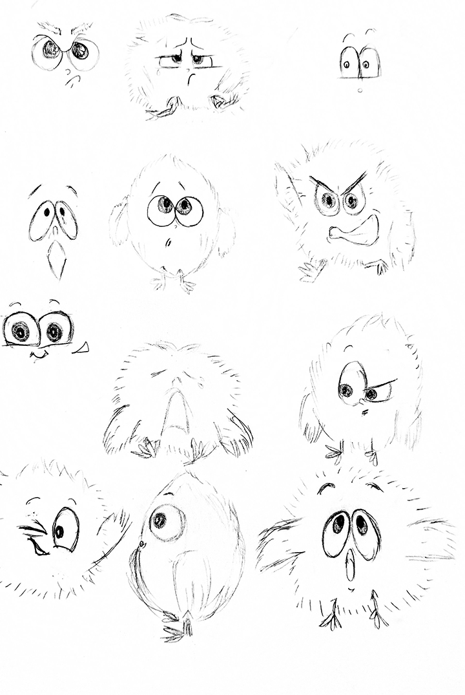

-
Hatched
-
2 months
-
team of 5
-
assignment
Process
A bird of many faces /1
In the Animation course at SIAT we were tasked with making a short film, which consisted of creating a cohesive storyline, soundtrack as well as 3D modelling our own original assets and animating them. We had done this within 2 months with a team of 5. To begin this process we each had ideated our own storylines and voted for which ones we had liked most. We knew that we wanted our short film to take place in one big setting as this would allow us to avoid modelling several different scenes, with one big scene we just had to move the camera to different sections. This allowed us to focus more on creating quality animation as we wanted to go for a cute pixar-like round rendering style.
We concluded our vote with my teammate Julia’s concept of a newly hatched bird that had fallen out of a tree and couldn’t get back to the nest. From here we began ideating different bird main characters by sketching them. This process of sketching different character designs allowed us to hone down more on the type of style we had wanted to make this animation.
After we had decided on the main character we then made the storyboard of the film, creating our cohesive story. We then divided the parts between each member and who wanted to do which part, and surprisingly everyone wanted to animate and model their specific scenes. This meant that we individually had to create our own scene-specific assets and create our own lighting and camera placement for the scenes. However we did have to create universal assets such as the main character, and the scene, which I had made. The problem of creating this scene was making it not too intensive, but also keeping the asset from breaking when sharing the file as maya is quite buggy. I had managed to do so by using a live-brush tool in Maya to create the tree which also allowed me to customize and create it recursively, while having it naturally animated as well.
Feathers and IK skeletons /2
For the main character we had used Maya’s “xGen” tool to create the feathered / fluffy look of the character, although we know that the character’s feathers look like spikes we figured that it
gave
it more character. We also had to create an IK Skeleton for the character so that we could animate him.
Once the ik was finished it allowed us to individually animate the bird for our chosen scenes. One of the most important animations was the walk cycle as it would be used whenever the character is moving on their own, the toughest
problem of this was making sure that the feet of the bird wouldn't clip through the ground.


One of the bigger scenes that I had animated was the crying scene in our film. This part was very interesting as I had to combine 2D Animation with 3D Animation, creating a 2D animation of a stream of water to resemble crying in Adobe Photoshop, and creating this as an animated texture in Maya. This allowed me to create this crying animation which makes it almost seem like paper-like.
Communication errors /3
A big problem we had encountered was that there was a big lack of communication within the team, as there was a big team of five but not a lot of communication of what each person’s progress was on their assigned task. This did end up giving us trouble as some people did not do their entire workload which had ended up with us sharing the workload amongst the team members that had already finished their task. By communicating which parts people needed assistance on we were able to finish our parts.
Reflection
Hatched /4
A big takeaway from this project was the importance of communication between team members and knowing when people should be checked up on. Communicating when people need assistance with their workload or if they can’t handle all of the workload they had promised is important in ensuring that the project gets completed. Creating this short film was like assembling a very complicated puzzle that we had to eventually make all these pieces we’ve individually made fit with each other. I am very content with the result of our short film and the quality of the animation.